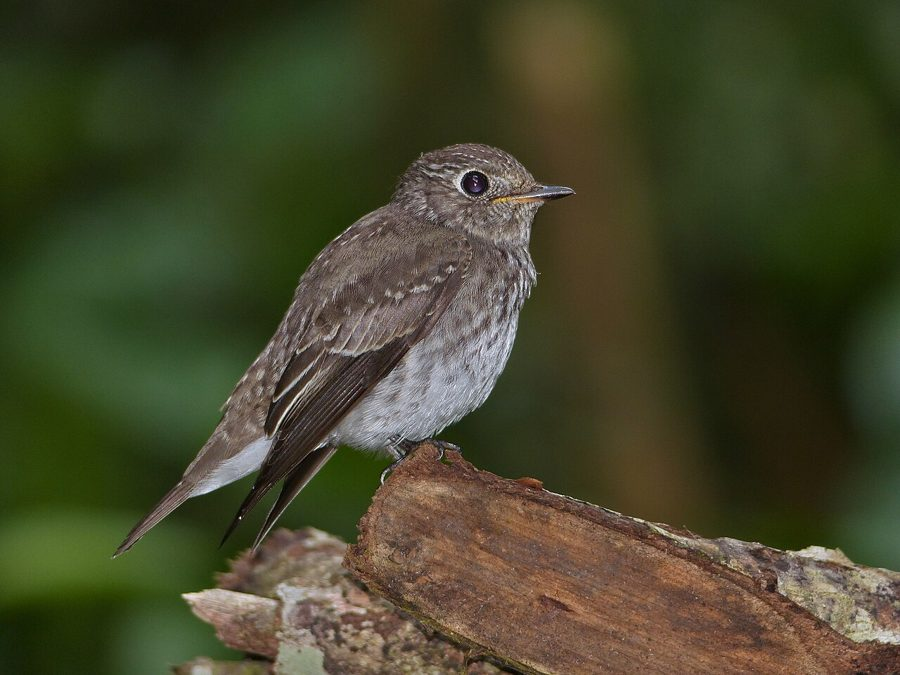

एशियन ब्राउन फ्लाईकैचरAsian Brown Flycatcher
Muscicapa latirostris · Muscicapidae · BRD-0370

- Scientific name वैज्ञानिक नाम
- Muscicapa latirostris Raffles, 1822
- Family कुल
- Muscicapidae
- Hindi हिंदी
- एशियन ब्राउन फ्लाईकैचर
- Local names स्थानीय नाम
- asian brown flycatcher, indian brown flycatcher
- Status here यहाँ की स्थिति
- native
- Movement आवागमन
- Migrant
- Known from कहाँ दर्ज
- Others have published records from the Basti–Ayodhya districts बस्ती–अयोध्या के ज़िलों से दूसरों के प्रकाशित अभिलेख
- IUCN IUCN
- LC
- Review समीक्षा
- not yet reviewed
When to look कब देखें
Migrant प्रवासी. Expected mainly in January, February, April, July, August, September, November, December. मुख्यतः जनवरी, फ़रवरी, अप्रैल, जुलाई, अगस्त, सितंबर, नवंबर, दिसंबर में अपेक्षित।
Breeds from Japan to Lake Baikal and in the Himalayas and plains of the United Provinces (Baker 1924). GBIF records in Uttar Pradesh fall in January, February, April, July, August, September, November, and December. All migrants and visitors →
Tell it apart from इनसे अलग पहचानें
एशियन ब्राउन फ्लाईकैचर / Asian Brown Flycatcher
Muscicapa latirostris Raffles, 1822 — Muscicapidae
एशियन ब्राउन फ्लाईकैचर — वनों और पेड़ों के बीच दिखने वाली एक छोटी, शांत और भूरे-स्लेटी रंग की मक्खीमार चिड़िया। बेकर (1924) के अनुसार इसका ऊपरी हिस्सा मटमैला राख जैसा भूरा होता है, आंख के चारों ओर हल्का सफेद छल्ला होता है, सीने और गले पर राख-भूरी धारियां होती हैं और चोंच काली होती है जिसका आधार हल्का होता है। यह जमीन पर नहीं उतरती और पूरी तरह हवा में उड़ते हुए कीड़े पकड़ती है।
Quick Identification त्वरित पहचान
| Feature | Description | |
|---|---|---|
| Habit | Small, quiet flycatcher of secluded well-wooded country perching upright on branches | |
| Upperparts | Brown above, "very much more grey" than the [[malayan\ | Malayan]] race; feathers of the crown centred darker (Baker 1924, p. 249) |
| Eye-ring | Lores and a ring round the eye dull white (Baker 1924, p. 249) | |
| Bill | Bill black, the base paler, more conspicuously so in winter (Baker 1924, p. 249) | |
| Underparts | Dull white; breast, throat and flanks streaked and mottled with ashy-brown (Baker 1924, p. 249) | |
| Tail | Uniform dark brown tail lacking white basal patches or white outer feathers (Baker 1924, p. 249) |
Field tip: Look for a plain grey-brown flycatcher with a dull white ring round the eye and a pale base to the bill, catching insects on the wing (Baker 1924, pp. 249–250).
हिंदी:
धूसर-भूरी पीठ, आंख के चारों ओर हल्का सफेद छल्ला और काली चोंच का हल्का आधार देखकर इसे पहचाना जा सकता है (बेकर 1924)।
Morphology आकारिकी
Measurements as given by Baker (1924) for Alseonax latirostris poonensis:
| Measurement | Range |
|---|---|
| Biometrics | Wing 66 to 72 mm. (birds from the plains of India) (Baker 1924) |
Stuart Baker (1924, p. 249) described the plumage: "Similar to the preceding bird but very much more grey both above and below. This is the 'ashy-grey' bird as described by Oates."
Colours of soft parts: "Iris brown ; bill black, the base paler, more conspicuously so in winter, mouth orange ; legs and feet black" (Baker 1924, p. 249, for the nominate race; poonensis "as in" it).
हिंदी:
बेकर (1924) के अनुसार भारत के मैदानी भागों के पक्षियों के डैने 66 से 72 मिमी होते हैं। आंखें भूरी, चोंच काली जिसका आधार हल्का होता है, तथा पैर काले होते हैं।
Behaviour & Ecology व्यवहार और पारिस्थितिकी
Stuart Baker (1924, p. 250) noted: "This Flycatcher is a bird of the more secluded well-wooded country, especially where it is broken and rugged and is apparently not found in the more open lend country. It is a very quiet little bird, singing an insignificant little song and more often uttering a soft vibrant churr. It feeds entirely on the wing and does not venture on to the ground to capture its insect-food."
Baker (1924, p. 250) added: "According to Scully, it is a sociable bird in winter, consorting with, but also fighting with, others of its kind."
हिंदी:
बेकर (1924) के अनुसार यह शांत और एकांत पसंद चिड़िया है जो घने पेड़ों वाले स्थानों में रहती है। यह जमीन पर नहीं उतरती बल्कि हवा में ही उड़ते हुए कीड़े पकड़ती है।
Life Cycle / Phenology जीवन चक्र
Baker (1924, p. 250) recorded that the Indian race poonensis breeds in the sub-Himalayas and parts of the peninsula: "The nest is a rather large compact cup made of moss and lichen and lined with roots, fibres and feathers... The breeding-season everywhere seems to be May and June."
In Uttar Pradesh, published occurrences span multiple seasons, with records documented across spring, summer, autumn, and winter.
हिंदी:
बेकर (1924) के अनुसार यह मई और जून में काई और घास की जड़ों से बनी सुंदर प्याली जैसा घोंसला बनाकर अंडे देती है। उत्तर प्रदेश में इसके रिकॉर्ड विभिन्न महीनों में दर्ज किए गए हैं।
Host Plants or Prey आहार
Stuart Baker (1924, p. 250) described the feeding behaviour: "It feeds entirely on the wing and does not venture on to the ground to capture its insect-food."
हिंदी:
बेकर (1924) के अनुसार इसका भोजन पूरी तरह से हवा में उड़ने वाले छोटे कीड़े हैं, जिन्हें यह डालियों से उड़ान भरकर पकड़ती है।
Predators / Natural Enemies शत्रु
No source opened for this atlas names a specific predator of this bird.
हिंदी:
इस एटलस के लिए खोले गए किसी भी स्रोत में इस छोटी चिड़िया के किसी विशिष्ट शिकारी का उल्लेख नहीं है।
Agricultural / Human Relevance कृषि प्रासंगिकता
By consuming small flying insects in wooded areas, it acts as an effective natural insectivore. Protected under the Wildlife (Protection) Act, 1972.
हिंदी:
पेड़ों के बीच उड़ते हुए कीड़ों को खाकर यह कीट नियंत्रण में मदद करती है। यह वन्यजीव (संरक्षण) अधिनियम, 1972 के तहत संरक्षित है।
Expected Locally स्थानीय रूप से अपेक्षित
Not a field record. Written from published accounts for eastern Uttar Pradesh. No confirmed local sighting yet — if you have seen it, that is what the atlas needs.
अभी तक स्थानीय पुष्टि नहीं। यह विवरण प्रकाशित स्रोतों से है, किसी अवलोकन से नहीं।
GBIF holds published records from these districts, one of them from Ayodhya (Faizabad); none from Basti.
In the core districts, there is one eBird record from Faizabad. In the wider plain, published occurrences are known from Lucknow (six records), Lakhimpur Kheri (three records), Barabanki (one record), and Varanasi (one record), reported by ten observers between 2011 and 2023 in January, February, April, July, August, September, November, and December.
A first record would be a photograph with place and date, sent through the About page.
Distribution वितरण
Global range: Baker (1924, p. 249) gave the distribution: "Breeding from Japan to Lake Baikal and throughout the sub-Himalayas and Himalayas and also in the plains of the Central Provinces, United Provinces and the Western Ghats to South Travancore and probably in Ceylon, where it has been recorded in June."
In India: Baker (1924, p. 249) recorded it breeding "throughout the sub-Himalayas and Himalayas and also in the plains of the Central Provinces, United Provinces and the Western Ghats to South Travancore".
In Uttar Pradesh: Published records come from Lucknow, Lakhimpur Kheri, Barabanki, Varanasi, and a single observation from Faizabad (Ayodhya district). GBIF holds no record from Basti.
In Basti district / eastern UP: GBIF holds one eBird record from Ayodhya (Faizabad) district and none from Basti; the others nearest are in Barabanki and Lucknow.
हिंदी:
बेकर (1924) के अनुसार यह जापान से बैकाल झील, हिमालय और संयुक्त प्रांत (उत्तर प्रदेश) के मैदानों में पाई जाती है। उत्तर प्रदेश में इसके रिकॉर्ड लखनऊ, लखीमपुर खीरी, बाराबंकी, वाराणसी और फैजाबाद से हैं।
Research Questions शोध प्रश्न
- What structural canopy characteristics of wooded tracts in eastern Uttar Pradesh attract migrant Asian Brown Flycatchers? / पूर्वी उत्तर प्रदेश के वनों की कौन सी विशेषताएं इस प्रवासी मक्खीमार को आकर्षित करती हैं?
- Does the Asian Brown Flycatcher compete for sallying perches with wintering Taiga Flycatchers? / क्या जाड़ों में शिकार की डालियों को लेकर इसका टैगा फ्लाईकैचर से कोई मुकाबला होता है?
- What is the seasonal residency duration of passage flycatchers in the Gomti and Ghaghara riparian belts?
- What insect orders predominate in the diet of birds foraging within wooded tracts?
- Can local birders distinguish this plain flycatcher from other brown muscicapids without binoculars? (An observer can look for the pale base of the bill and the dull white eye-ring.)
Similar Species मिलती-जुलती प्रजातियाँ
| Species | How to tell apart | हिंदी | |
|---|---|---|---|
| [[taiga_flycatcher | Taiga Flycatcher]] (Ficedula albicilla) | Jet-black tail contrasting with white outer feathers, cocking tail frequently; male with rufous throat patch in summer (Baker 1924) | टैगा फ्लाईकैचर |
| [[red_breasted_flycatcher | Red-breasted Flycatcher]] (Ficedula parva) | Prominent white patches at base of dark tail, cocked tail habit, orange-red throat in adult males (Grimmett et al. 2011) | रेड-ब्रेस्टेड फ़्लाईकैचर |
Field rule: Plain grey-brown upperparts, a dull white ring round the eye, a black bill with a paler base (Baker 1924, p. 249), and a dark tail without the white patches of the Ficedula flycatchers distinguish the Asian Brown Flycatcher.
हिंदी:
टैगा और रेड-ब्रेस्टेड फ्लाईकैचर की पूंछ पर सफेद किनारे होते हैं और वे पूंछ को ऊपर उठाती हैं; एशियन ब्राउन फ्लाईकैचर की पूंछ पूरी काली-भूरी होती है और आंख पर सफेद घेरा होता है।
Taxonomy & Classification वर्गीकरण
Original description. Described by Thomas Stamford Raffles in 1822 in Transactions of the Linnean Society of London (Vol. 13, p. 312), under the binomial Muscicapa latirostris, from Sumatra.
Subspecies. Stuart Baker (1924, pp. 249–250) placed the Indian form under Alseonax latirostris poonensis (Sykes, 1832), recording that it breeds "throughout the sub-Himalayas and Himalayas and also in the plains of the Central Provinces, United Provinces and the Western Ghats". The Red List assesses the species under the synonym Muscicapa dauurica Pallas, 1811.
Family and order placement. Order Passeriformes, family Muscicapidae (Old World flycatchers), genus Muscicapa.
IUCN status rationale. Evaluated as Least Concern (LC) on the IUCN Red List under the name Muscicapa dauurica (BirdLife International 2016).
हिंदी:
रैफल्स ने 1822 में इसका वर्णन किया था। बेकर (1924) ने इसे अल्सीओनैक्स वंश में रखा था। रेड लिस्ट में इसे मस्सिकापा डाउरिका के नाम से संकट-मुक्त (LC) श्रेणी में आंका गया है।
Photo Gallery फोटो गैलरी
No photos yet — add field photos to media/species/asian_brown_flycatcher/ and run node scripts/sync_photos.js.
Photos needed आवश्यक फोटो
- [ ] Adult perching upright in shaded canopy showing white eye-ring and broad bill (छायादार पेड़ पर बैठा वयस्क जिसमें सफेद आंख का छल्ला और चोंच दिखे)
- [ ] Profile view showing uniform grey-brown back and dark tail (पार्श्व दृश्य जिसमें धूसर-भूरी पीठ और गहरी पूंछ दिखे)
References संदर्भ
- Raffles, T. S. (1822). Transactions of the Linnean Society of London. Vol. 13. Linnean Society, London, p. 312 (as Muscicapa latirostris).
- Baker, E. C. S. (1924). The Fauna of British India, Including Ceylon and Burma. Birds. Vol. 2. 2nd ed. Taylor & Francis, London, pp. 249–250 (as Alseonax latirostris poonensis).
- Ali, S. & Ripley, S. D. (1987). Compact Handbook of the Birds of India and Pakistan. 2nd ed. Oxford University Press, New Delhi.
- Grimmett, R., Inskipp, C. & Inskipp, T. (2011). Birds of the Indian Subcontinent. 2nd ed. Christopher Helm, London.
- Rasmussen, P. C. & Anderton, J. C. (2012). Birds of South Asia: The Ripley Guide. 2nd ed. Smithsonian Institution and Lynx Edicions, Washington, D.C. and Barcelona.
- BirdLife International (2016). Muscicapa dauurica. The IUCN Red List of Threatened Species 2016: e.T22709207A94196624. doi:10.2305/IUCN.UK.2016-3.RLTS.T22709207A94196624.en
- GBIF Occurrence Data — Muscicapa latirostris, India (2025).
Source file: species/fauna/birds/asian_brown_flycatcher.md